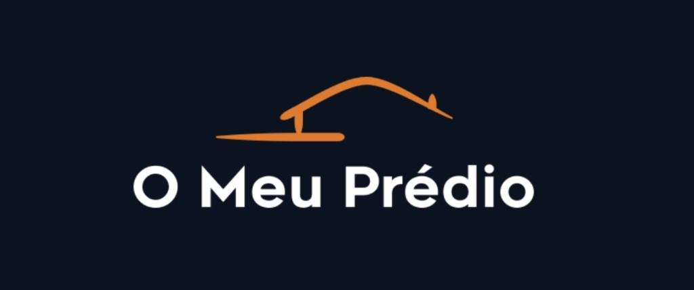
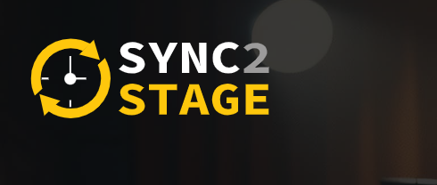
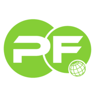
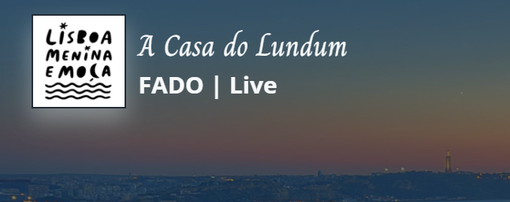

Engenheiro de Software
Ricardo Maurício
Fundador O Meu Prédio SaaS de gestão de condomíniosCrio produtos digitais de raiz — da arquitectura backend à experiência do utilizador. Mais de 25 anos em PHP, APIs e sistemas à medida.
Engenheiro de Software
Crio produtos digitais de raiz — da arquitectura backend à experiência do utilizador. Mais de 25 anos em PHP, APIs e sistemas à medida.
Sou engenheiro de software e fundador, com mais de 25 anos a conceber, desenvolver e manter sistemas web. Trabalho sobretudo em backend PHP, APIs e arquitectura, e lanço produtos próprios — o mais recente é o O Meu Prédio.
A minha experiência abrange desde desenvolvimento de sites e sistemas de gestão de conteúdo até aplicações web complexas. Tenho conhecimento profundo em frameworks PHP como Symfony, sistemas CMS como Drupal e WordPress, e plataformas educacionais como Moodle.
Trabalho com bases de dados relacionais (MySQL) e NoSQL (MongoDB), sempre procurando a melhor solução para cada projecto. Experiência em otimização e design de esquemas.
Estou sempre a aprender novas tecnologias e a melhorar as minhas competências para entregar projectos de alta qualidade. Foco em soluções modernas e eficientes.
Muito bom nível de conhecimentos de Inglês – escrito e falado. Certificado First Certificate in English pela University of Cambridge.
Espírito de equipa, ouvinte atento, flexível, dinâmico e pro-activo. Capacidade de adaptação a ambientes multiculturais.
Membro da Tuna Universitária do Instituto Superior Técnico desde 1999, onde participei na organização de vários eventos musicais. Fiz parte de duas direcções, incluindo presidência (2005/2006), e conselho fiscal (2009/2010).
Desenvolvimento backend robusto e escalável
Estrutura semântica e acessível
Interatividade e experiência do usuário
Design moderno e responsivo
CMS enterprise e customização
Desenvolvimento de temas e plugins
Plataforma educacional e e-learning
Framework PHP para aplicações complexas
Base de dados NoSQL
Base de dados relacional
Aplicações móveis nativas
Ferramentas de trabalho no dia a dia
A minha trajetória educacional
Instituto Superior Técnico
1997
Frequência em Engenharia Informática e de Computadores no Instituto Superior Técnico, uma das mais prestigiadas instituições de ensino superior de Portugal.
University of Cambridge
1999
Certificado de Inglês pela University of Cambridge (cert. 2335388).
SAF - Sistemas Avançados de Formação S.A.
2004
Curso de Formação Profissional com classificação final de Muito Bom (cert. 350/04).
I.E.F.P.
2013
Curso homologado pelo I.E.F.P., para atribuição do CCP (Certificado de Competências Pedagógicas) (cert. F605932/2013).
INEXH
2015
Treino de Desenvolvimento e Liderança pelo INEXH.
ed-rom
2018
Curso de Formação Profissional de Formação de Administradores Moodle pela ed-rom (cert. 8/2018).
B7Web
2020
Curso de HTML 5 e CSS3 pela B7Web (cert. 8821193).
B7Web
2020
Curso de Git/GitHub pela B7Web (cert. 2687518).
2021
Curso de Fundamentos do Scrum pela LinkedIn.
2021
Curso de Fundamentos de Gestão Ágil pela LinkedIn.
DIO
2021
Curso de Introdução ao Git e ao GitHub pela DIO (cert. B5DCB4EF).
2021
Curso de Desenvolvimento Ágil de Software pela LinkedIn.
Udemy
2021
Drupal Tutorial: Drupal 8 Beginner to Advanced in 8 PROJECTS pela Udemy (cert. UC-6b3c6a93-dcdd-42b3-9a25-4013599feca3).
Udemy
2024
Curso de PHP Unit Testing with PHPUnit pela Udemy (cert. UC-7883147c-cfcc-4403-a1d0-63ac64a354f7).
Percurso em empresas e instituições
NR3 IT Limited
Set 2021 - Presente
Desenvolvimento de software e soluções backend para projectos internacionais. Especialização em programação backend com PHP, criando aplicações robustas, escaláveis e de alta performance. Desenvolvimento de APIs, integrações de sistemas e arquitectura de software empresarial.
Conselho Regional de Lisboa da Ordem dos Advogados
Jun 2001 - Set 2021 · 20 anos e 4 meses
Mais de 20 anos de experiência como técnico sénior de tecnologias de informação, inicialmente como freelancer (2001-2005) e posteriormente em regime full-time (2005-2021). Responsável por suporte técnico, desenvolvimento web, manutenção de sistemas e implementação de soluções tecnológicas para uma das mais importantes instituições jurídicas de Portugal.
Produtos e plataformas que concebi e desenvolvi

Jun 2025 - Presente
Como criador e único desenvolvedor, concebi e construí o O Meu Prédio — um SaaS que reúne quotas, recibos, assembleias, comunicação, documentos, ocorrências e reservas num único sistema. Inclui app móvel para condóminos e está em desenvolvimento activo, com novas funcionalidades a serem lançadas continuamente.
Ver Projecto
Plataforma revolucionária que transforma qualquer concerto numa experiência interativa única. Como criador e único desenvolvedor, concebi e desenvolvi esta solução que sincroniza letras em tempo real entre artistas e público, permitindo que todos cantem juntos durante espetáculos ao vivo. O projecto encontra-se actualmente em desenvolvimento activo, com melhorias e novas funcionalidades a serem implementadas continuamente.
Ver Projecto
Plataforma web completa para profissionais do Direito com mais de 15 anos de existência. Desenvolvi todas as 5 versões do sítio, incluindo ferramentas de cálculo, minutas, gestão de conteúdos e sistema de membros com diferentes planos de acesso.
Ver Projecto
Web developer responsável pelo desenvolvimento e manutenção do sítio WordPress da casa de fado tradicional Lisboa Menina e Moça, localizada junto à Sé de Lisboa. Desenvolvimento completo incluindo design moderno, sistema de reservas, galeria de fotos e apresentação da história e músicos desta experiência única de fado ao vivo no coração de Alfama.
Ver ProjectoProjectos desenvolvidos anteriormente
RSA Advogados
2007 - 2012
Desenvolvimento e manutenção do site institucional do escritório RSA Advogados.
APGS
2006 - 2009
Desenvolvimento e manutenção do site da APGS.
Quinta São João
-
Desenvolvimento do site da Quinta São João.
Sítio do Advogado
-
Desenvolvimento e manutenção do site Sítio do Advogado.
Alves & Águas Lda.
-
Desenvolvimento e manutenção do site da empresa Alves & Águas Lda.
Vamos conversar sobre o seu próximo projecto